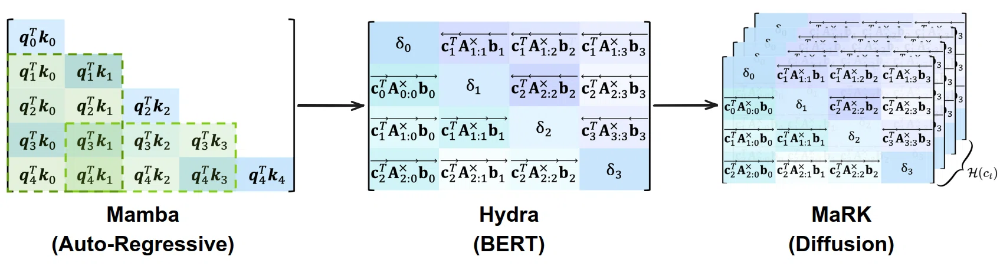
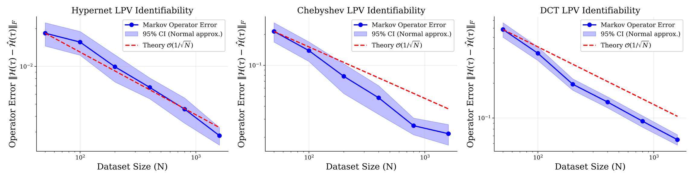
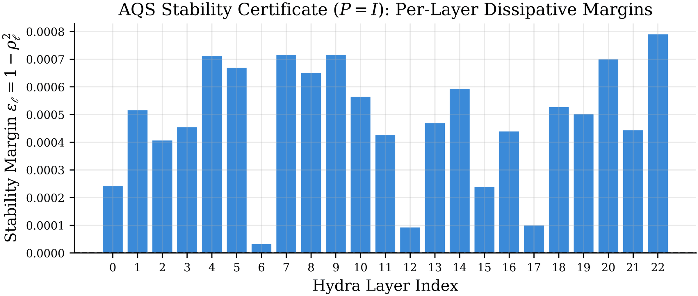
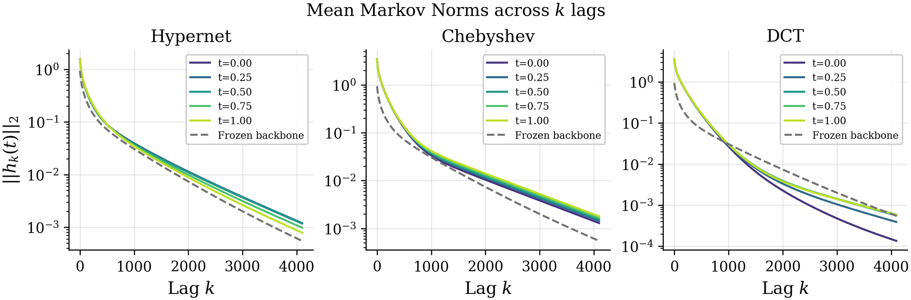
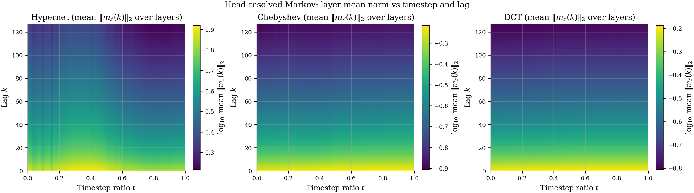

MaRK: Markov-adapted Recurrent Kernels for
Dynamic Operator Conditioning in State Space Models

We propose an LPV-SSM framework that conditions SSMs via direct recurrent operator modulation by turning the SSM parameters into matrix-valued functions, with provable stability, operator identifiability, and empirical timestep-dependent memory adaptation.
Abstract
State Space Models (SSMs) offer an efficient alternative to Transformers for sequence modeling, yet conditioning pre-trained SSMs for iterative generation typically operates outside the recurrent operator, through input injection or activation modulation. While such mechanisms expose the model to conditioning information, they leave the underlying temporal dynamics fixed. We introduce MaRK (Markov-adapted Recurrent Kernels), a dynamic operator-conditioning framework that maps context vectors directly into bounded modulations of a frozen SSM's recurrence (A), read-in (B), read-out (C), skip (D), and discretization (Δ) parameters. Viewed through the lens of Linear Parameter-Varying systems, MaRK induces a context-indexed family of Markov parameter sequences, allowing each diffusion timestep to reshape the model's input-output memory kernel. We instantiate MaRK on a frozen 111M-parameter Hydra SSM backbone and study three adapter geometries: Hypernet, Chebyshev polynomial, and Discrete Cosine Transform kernels. Since these adapters modify the Markov parameter sequence through low-rank auxiliary maps on the frozen backbone, parameter-efficient fine-tuning arises as a structural consequence of the adaptation mechanism itself, requiring only 7.5–13M trainable auxiliary parameters to transition from a bidirectional objective to an iterative diffusion regime. The bounded recurrence parameterization further yields an analytic Affine Quadratic Stability certificate for the modulated recurrence. Through synthetic LPV recovery experiments and Markov-operator diagnostics, we show that MaRK recovers coordinate-invariant temporal operators under matched assumptions and produces distinct, stable timestep-conditioned memory profiles. Empirically, the Chebyshev variant yields the strongest performance, achieving an average validation loss of 2.63, followed by the DCT (2.66) and Hypernet (3.60) geometries. Together, these results provide initial evidence that dynamic operator modulation is a principled operator-level conditioning mechanism for adapting SSMs beyond input-stream injection and adaptive normalization.
Conditional generation asks a sequence model to change how it behaves as generation proceeds. For a State Space Model that behaviour is the recurrence: the input–output memory kernel that decides how far back the model looks. Today's conditioning mechanisms deliberately leave that kernel alone:
- Input-stream injection concatenates the condition into the sequence. It is cheap, but it asks the hidden state to carry that signal across positions and lags.
- Adaptive LayerNorm rescales activations. It works well inside Transformers, but it remains external to the continuous-time SSM operator.
MaRK moves conditioning inside the operator. A context vector (here, the diffusion timestep embedding) is mapped to bounded, low-rank modulations of the frozen backbone's recurrence (A), read-in (B), read-out (C), skip (D) and discretization (Δ) parameters. Because that map is bounded and low-rank, the result is a context-indexed family of stable input–output operators, and parameter-efficient adaptation falls out of the mechanism itself instead of being bolted on afterwards.

Operator identifiability: Hypernet | Chebyshev | DCT. Markov Operator Error \(\mathrm{MOE} = \lVert \mathcal{H}_{\text{true}} - \hat{\mathcal{H}}_{\text{est}} \rVert_F\) (coordinate-invariant, the difference between the true and estimated Markov parameter sequences) against the number of synthetic trajectories, \(N \in [50, 1600]\). All three kernels decay along the \(O(N^{-1/2})\) reference (red dashed); the fitted rates are \(N^{-0.54}\) for Hypernet, \(N^{-0.66}\) for Chebyshev and \(N^{-0.64}\) for DCT. Chebyshev reaches the lowest structured-basis error, and DCT's larger constant is consistent with its extra bandlimited restriction rather than a loss of recoverability.

Stability certificate. Per-layer stability margin \(\varepsilon_\ell\) of the pre-trained 23-layer Hydra SSM evaluated at the extreme bounds of MaRK modulation. All 23 layers certify with \(\varepsilon_\ell > 0\) using the constructive \(P = I\) Lyapunov function, so the modulated recurrence stays stable for every admissible conditioning context.
If MaRK really conditions the operator, then each frozen diffusion timestep should come with its own memory kernel \(\mathcal{H}(t) = \{C(t)A^k(t)B(t)\}_{k \geq 0}\). We measure the head-averaged Markov norm \(\|h_k(t)\|_2\) over lags \(k \le 4096\) and compare it with the unmodulated backbone. The curves separate, and because the Markov sequence fixes the transfer function up to a change of state coordinates, that separation is a change of input–output operator, not merely a timestep-dependent activation gain.

Timestep-conditioned Markov operators. Head-resolved mean Markov parameter norm against lag, over lags up to 4096, for the Hypernet, Chebyshev and DCT adapters at \(t \in \{0, 0.25, 0.5, 0.75, 1.0\}\). The dashed curve is the frozen Hydra backbone. Chebyshev forms an ordered family of smooth decay profiles; DCT redistributes energy and crosses the backbone at intermediate lags; Hypernet gives the broadest upward shift at medium and long lags.

Head-resolved memory profile. Markov parameter norm per SSM head as a function of lag and diffusion timestep. Each row of the map is one head's temporal memory, so the figure exposes how the denoising trajectory reorganises memory across heads rather than applying one global gain.
Adapter ablation
| Kernel | Params | PTB | WikiText | Lambada | AG News | Arxiv | Avg. |
|---|---|---|---|---|---|---|---|
| Hypernet | ~7.5M | 3.03 | 3.72 | 3.23 | 3.90 | 4.11 | 3.60 |
| Chebyshev | ~8.0M | 2.59 | 2.67 | 2.59 | 2.78 | 2.53 | 2.63 |
| DCT | ~13.0M | 2.28 | 2.70 | 2.85 | 2.87 | 2.58 | 2.66 |
CART losses (lower is better) across completed validation datasets. Best value per column in bold.
The structured bases beat the direct Hypernet projection on every completed validation domain. Chebyshev takes the best average at nearly the same trainable budget as Hypernet (~8M vs ~7.5M), while the larger DCT adapter stays close on average and posts the best PTB score. The signal is therefore not simply that more parameters help: once conditioning enters the SSM operator, the geometry of the context-to-operator map is what matters. Training uses CART (Context-Adaptive Token-level Noise Rescheduling), which reweights the masked-token loss per position according to how much usable local context surrounds each mask.
These are internal adapter ablations under a shared frozen backbone, diffusion objective and validation protocol; they are not a head-to-head comparison against separately trained diffusion language models. Adapters, training scripts and evaluation code are in the project repository.
BibTeX
@inproceedings{ibrahim2026mark,
author={Syed Ibrahim Omer, Ginny Y. Wong, Xiangyu Zhao},
booktitle={Advances in Neural Information Processing Systems},
title={MaRK: Markov-adapted Recurrent Kernels for Dynamic Operator Conditioning in State Space Models},
url={https://neurips.cc},
volume={40, Main Conference},
year={2026},
}